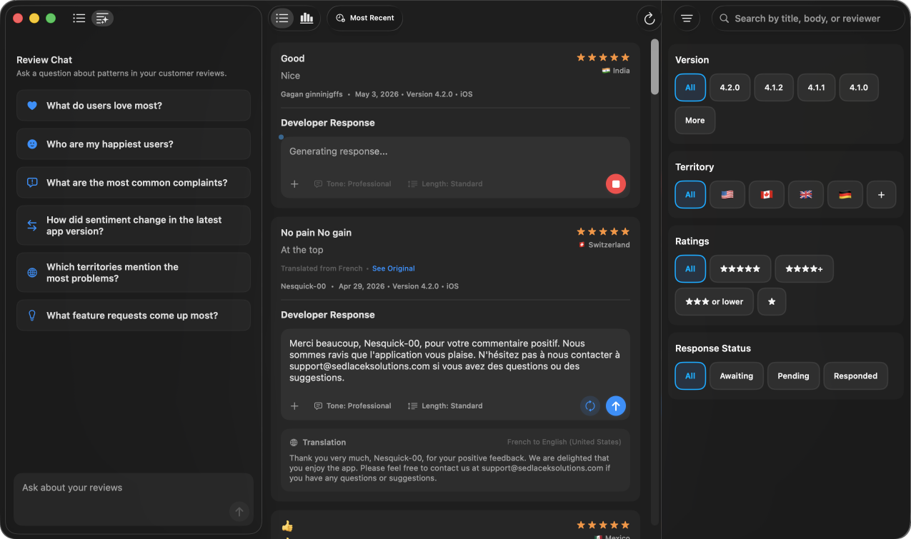
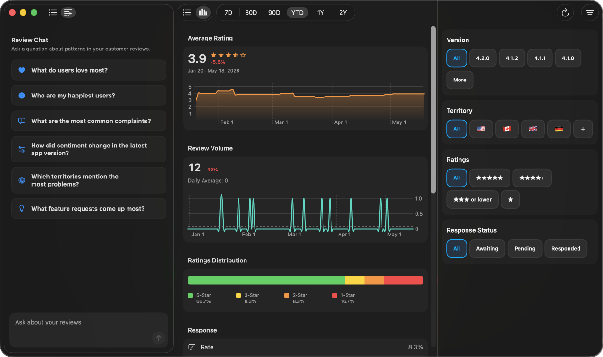
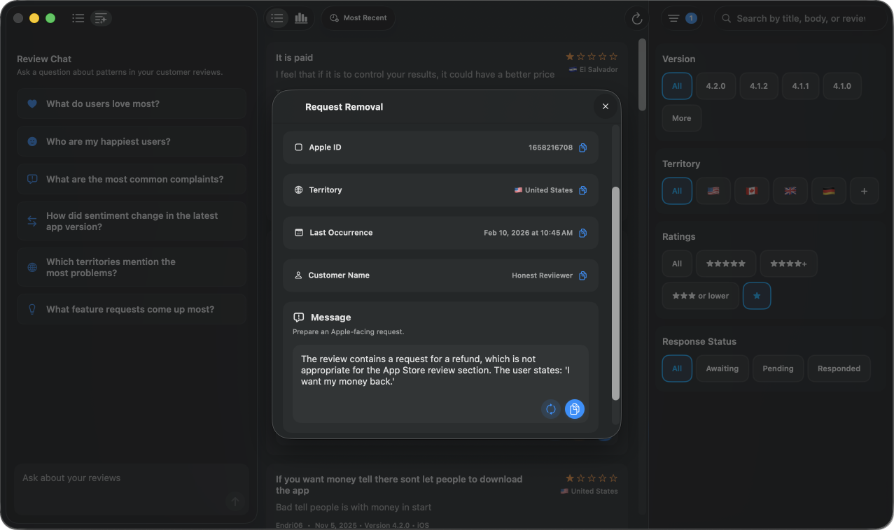

Workspace
The complete customer reviews workspace.
See Chat, response drafting, translations, and filters in one focused App Store Connect workflow. Scroll to spotlight each part of the same workspace.

Your App Store Connect workspace for Mac.
Reviews
Workspace
See Chat, response drafting, translations, and filters in one focused App Store Connect workflow. Scroll to spotlight each part of the same workspace.

Chat
Chat turns your customer reviews into answers about what users love, recurring complaints, sentiment changes, and feature requests.
Generated responses
Generate a response in context, adjust the tone and length, then send it without losing sight of the review, rating, version, or territory.
Translations
Keep the original text nearby while viewing translated reviews and translated response previews for international feedback.
Filters
Narrow the workspace to the reviews that matter, then pair the filtered list with the response and chat workflows beside it.
Metrics
Switch into metrics to see rating trends, review volume, and distribution in the same filtered workspace.

Request removal
When a review should be escalated, collect the review details and draft a concise request for App Store review moderation.
